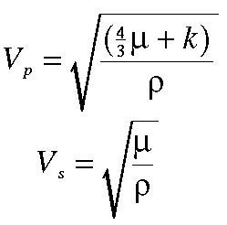

Seismic Wave Speeds and Rock Properties
 Before pursuing wave propagation issues any further, let's take a moment to describe how all this wave propagation stuff relates to geologic structure. It's clear from the previous examples that variations in the speed at which seismic waves propagate through the Earth* can cause variations in seismic waves recorded at the Earth's surface. For example, we've shown that reflected waves can be generated from a planar boundary in seismic wave speed that can be recorded at the Earth's surface. How do these velocity variations relate to properties of the rocks or soils through which the waves are propagating?
It can be shown that in homogeneous**, isotropic*** media the velocities of P and S waves through the media are given by the expressions shown to the right. Where Vp and Vs are the P and S wave velocities of the medium, ρ is the density of the medium, and μ and k are referred to as the shear and bulk modulii of the media. Taken together, μ and k are also known as elastic parameters. The elastic parameters quantitatively describe the following physical characteristics of the medium.
- Bulk Modulus - Is also known as the incompressability of the medium. Imagine you have a small cube of the material making up the medium and that you subject this cube to pressure by squeezing it on all sides. If the material is not very stiff, you can image that it would be possible to squeeze the material in this cube into a smaller cube. The bulk modulus describes the ratio of the pressure applied to the cube to the amount of volume change that the cube undergoes. If k is very large, then the material is very stiff, meaning that it doesn't compress very much even under large pressures. If k is small, then a small pressure can compress the material by large amounts. For example, gases have very small incompressabilities. Solids and liquids have large incompressabilities.
- Shear Modulus - The shear modulus describes how difficult it is to deform a cube of the material under an applied shearing force. For example, imagine you have a cube of material firmly cemented to a table top. Now, push on one of the top edges of the material parallel to the table top. If the material has a small shear modulus, you will be able to deform the cube in the direction you are pushing it so that the cube will take on the shape of a parallelogram. If the material has a large shear modulus, it will take a large force applied in this direction to deform the cube. Gases and fluids can not support shear forces. That is, they have shear modulii of zero. From the equations given above, notice that this implies that fluids and gases do not allow the propagation of S waves.
Any change in rock or soil property that causes ρ, μ, or k to change will cause seismic wave speed to change. For example, going from an unsaturated soil to a saturated soil will cause both the density and the bulk modulus to change. The bulk modulus changes because air-filled pores become filled with water. Water is much more difficult to compress than air. In fact, bulk modulus changes dominate this example. Thus, the P wave velocity changes a lot across water table while S wave velocities change very little.
Although this is a single example of how seismic velocities can change in the subsurface, you can imagine many other factors causing changes in velocity (such as changes in lithology, changes in cementation, changes in fluid content, changes in compaction, etc.). Thus, variations in seismic velocities offer the potential of being able to map many different subsurface features.
*Geophysicists refer to the speed at which seismic waves propagate through the Earth as seismic wave velocity. Clearly, in the context of defining how fast seismic energy is transmitted through a medium, speed is a more appropriate word to use than velocity. From our introductory physics classes, recall that velocity implies not only the speed at which something is moving but also the direction in which it is moving (i.e., speed is a scalar quantity, velocity is a vector quantity). Regardless of this well-established difference in the meaning of the two terms, in geophysical jargon, the term velocity is used as a synonym for speed.
**Homogeneous media are those whose properties do not vary with position.
***Isotropic media are those whose properties at any given position do not vary with direction.
Seismology
- Simple Earth Model: Low-Velocity Layer Over a Halfspacepg 11
- Head Wavespg 12
- Records of Ground Motionpg 13
- Travel-time Curves for a Simple Earth Modelpg 14
- First Arrivalspg 15
- Determining Earth Structure from Travel Timespg 16
- Derivation of Travel Time Equationspg 17
- High-Velocity Layer Over a Halfspace: Reprisepg 18
- Picking Times of Arrivalspg 25
- Wave Propagation with Multiple Horizontal Layerspg 26
- Travel Time Curves from Multiple Horizontalpg 27
- Hidden Layerspg 28
- Head Waves from a Dipping Layer: Shooting Down Dippg 29
- Head Waves from a Dipping Layer: Shooting Up Dippg 30
- A Field Procedure for Recognizing Dipping Bedspg 31
- Estimating Dips and Depths from Travelpg 32